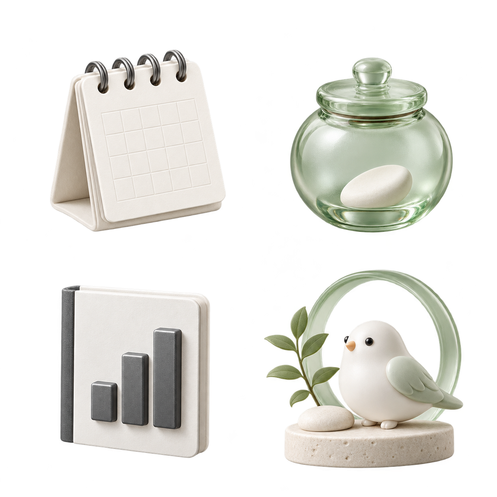
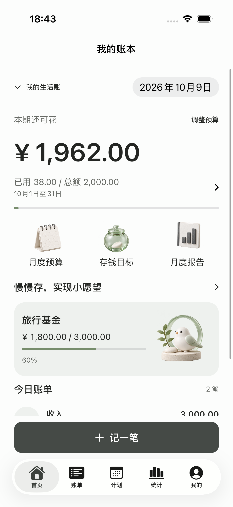
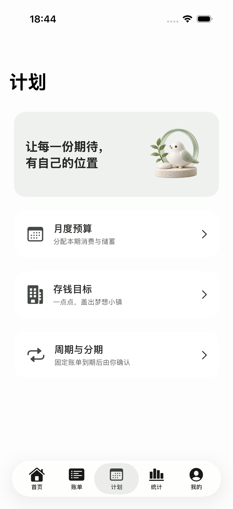
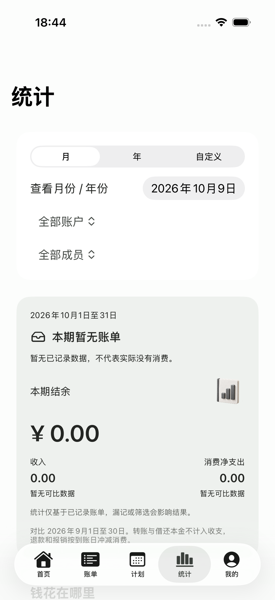

不止收入和支出
现金、银行卡、电子钱包，分别记录。退款关联原单，报销与 AA 到账有迹可循；转账和借还本金不混入消费。
iPhone · 即将上线
记下一杯咖啡，安排这个月的生活费。
从今天的一笔开始，让心里的小镇慢慢长大。
适用于 iOS 17 及以上 · 无需注册账号

每一个认真生活的日子，都算数。
应用原创主题插画
日常的小事，也值得记得
给学生生活费、家庭日常和个人小目标，一处简单的归属。
现金、银行卡、电子钱包，分别记录。退款关联原单，报销与 AA 到账有迹可循；转账和借还本金不混入消费。
设置总预算、分类限额和自己的账期。每天可花会预留待付固定支出；周期与分期账单，到期后由你确认入账。
为旅行、礼物或备用金创建目标，记录真实存入与取出。随着目标进度，小镇走过五个成长阶段。

三套主题，一样认真
素白留光、吉祥如意、金币辉煌。
留出舒服的空白，用喜欢的插画陪你记录。
主题只改变外观，不改变账本里的任何一笔。
从今天，看见一点点变化
存钱分配来自已有账户余额，不重复计入消费。统计根据已记录账单生成，漏记会影响结果。
存钱小镇
看见已存、还需与每月需存。存入向前一步，取出后进度也会如实变化。

生活复盘
按月、年或自选日期回顾收支，查看分类排行、月度趋势和上期对比。

以上为2026年10月9日实际主题界面示例，使用演示账单数据；新版增加广告。成长插画不代表投资收益。
关于广告
应用包含横幅、启动广告及内容过渡时的插页广告。开发页提供自愿观看的激励视频，完成后仅增加本地装饰感谢星章，不兑换现金、不改变预算与账本金额。广告 SDK 可能处理设备、广告及互动数据；同意与隐私选项以应用展示为准。你无需点击广告来使用记账功能。
即将上线
Pocket Wishes - 存钱日记 · iPhone 本机离线生活账本